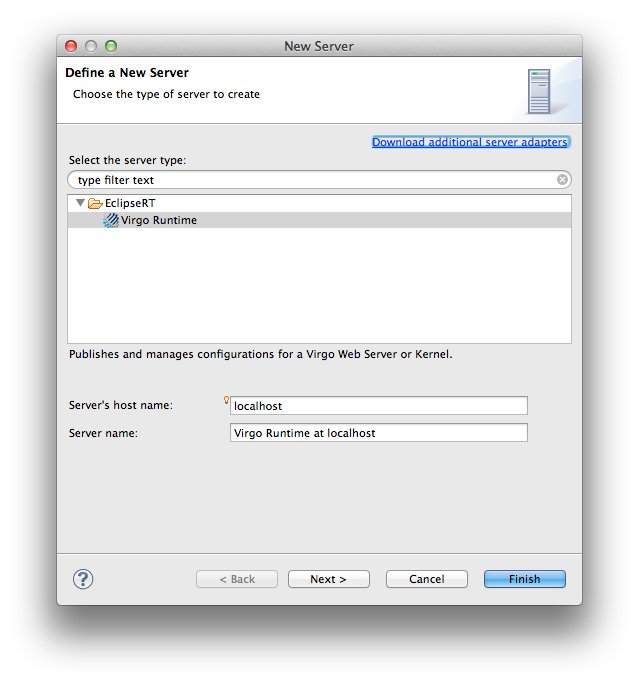
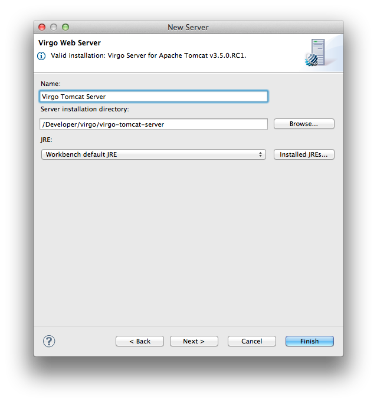

After installing the Tools from the update site outlined in the previous section, you will be able to configure an instance of the Virgo Runtime inside Eclipse.
To do so bring up the WTP Servers view (i.e., → → → → ). You can now right-click in the view and select " → ". This will bring up a "New Server" dialog. Select Virgo Runtime in the "@runtime.category@" category and click " ".

Within the "New Server Wizard" point to the installation directory of the Virgo Runtime and finish the wizard. (The tools will automatically detect the type of server install, so you can point to a Virgo Server for Apache Tomcat, Virgo Jetty Server, Virgo Kernel or any other supported Virgo Runtime.)

After finishing the wizard you should see a Virgo Runtime for the relevant server type in the Servers view.
To start, stop, and debug the created Virgo Runtime instance use the toolbar or the context menu actions of the Servers view.